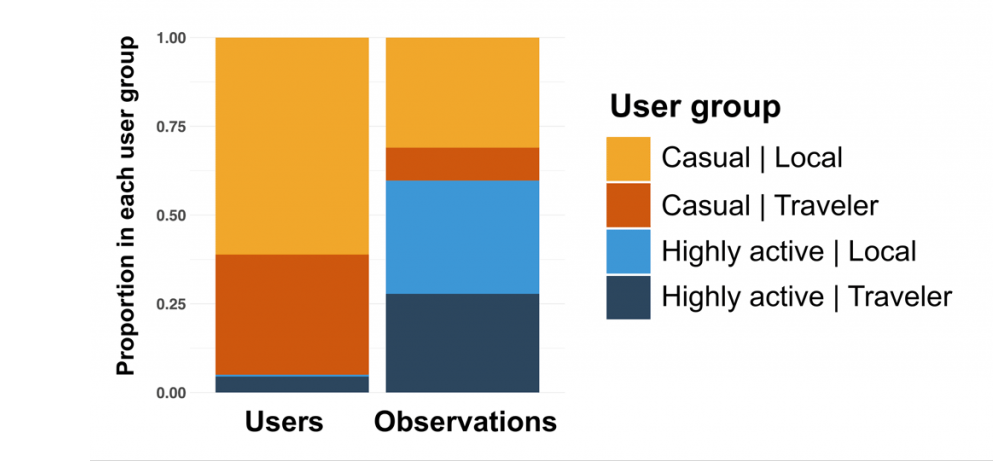
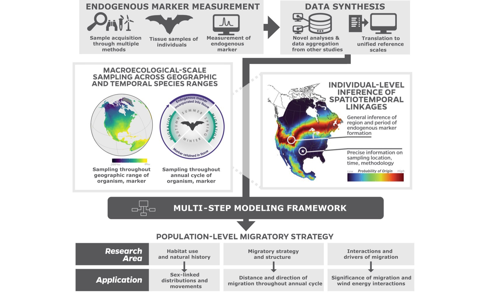
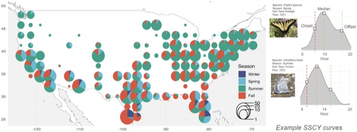
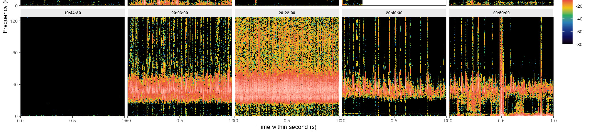

My work pairs pressing conservation questions with the quantitative methods needed to answer them, often in systems and taxa that would otherwise go understudied. Below, my main research areas are followed by the methodological approaches that cut across them.
Research Areas
Remote Biodiversity Monitoring

I develop remote, non-invasive approaches to monitor biodiversity and animal activity at scales that traditional field methods cannot reach, from passive acoustic sensing and bioacoustics to computer vision and weather-surveillance radar. I am now extending radar- and computer-vision–based methods to quantify animal movement and cave emergences across broad landscapes, a rapidly advancing frontier for migration ecology and conservation. This work builds on my role with the Limelight Rainforest team, winners of the $5M XPRIZE Rainforest grand prize, where I built a human-in-the-loop machine learning pipeline for bat bioacoustics and helped link canopy biodiversity from eDNA and acoustics to ecosystem structure and services.
-
Remote rainforest inventorying and human-in-the-loop ML for bat biodiversity survey — Team Limelight. XPRIZE grand-prize winner
I led bat bioacoustics and bioinformatics for Team Limelight (Limelight Rainforest), grand-prize winner of the $5M XPRIZE Rainforest competition (2024). A manuscript is in preparation.
XPRIZE Rainforest Team Limelight -

Campbell, CJ; et al. (2025). Migratory strategy is a key factor driving interactions at wind energy facilities in at-risk North American bats.
Ecology Letters 28:e70202.Combined large-scale distribution and movement data across at-risk North American bats to show that migratory strategy governs their overlap with, and fatality risk at, wind-energy facilities.
Article PDF
-
Weather-surveillance radar to monitor mass-emerging bat activity. Current project
Using weather-surveillance radar to detect and quantify the activity of mass-emerging bat colonies across broad regions.
-
Bioacoustics and computer-vision monitoring of bat emergence dynamics. Current project
Combining acoustic recordings and computer-vision video counts to resolve the timing and intensity of nightly bat emergences.
Biodiversity Informatics

The volume of openly accessible biodiversity data is growing exponentially, but coverage remains deeply uneven across taxa, regions, and time. I develop methods and tools to harness participatory science platforms like iNaturalist, diagnose biases in global biodiversity databases, and fill knowledge gaps in under-studied regions. A central future direction is quantifying global biodiversity sampling completeness across the Global Biodiversity Information Facility (GBIF), to identify where evidence-based conservation policy, including ambitious frameworks like the Kunming-Montreal 30x30 target, is most constrained by missing data.
-

Campbell, CJ; et al. (2023). Identifying the identifiers: how iNaturalist facilitates collaborative, research-relevant data generation.
BioScience 73(7):533–541.Showed that a small set of highly active, expert users drives most research-grade identifications on iNaturalist, a pattern that matters for how community-science data are used.
Article PDF -

Grady, E; Campbell, CJ; Callaghan, C; Guralnick, R. (2026). iNaturalist users exhibit distinct spatiotemporal sampling preferences, with implications for biodiversity science and project planning.
Citizen Science: Theory and Practice 11(1):3.Found that when and where users choose to record wildlife systematically shapes the biodiversity datasets those records become.
Article -

McCleery, R; Guralnick, R; Beatty, M; Belitz, M; Campbell, CJ; et al. (2023). Uniting experiments and big data to advance ecology and conservation.
Trends in Ecology & Evolution 38(10).Set out how controlled experiments and large observational datasets can complement each other rather than compete.
Article PDF
Aeroecology & Migration

Seasonal animal migration is a globally ubiquitous process that governs ecosystem structure and function, linking distant regions through the exchange of genes, energy, and disease. My research spans birds, bats, and insects to reveal the cryptic dynamics of migration and its consequences for wildlife conservation. Transitioning to renewable energy is essential to limit the worst effects of climate change, but wind energy development disproportionately affects migratory species. I study how migratory behavior drives fatality risk at wind energy facilities, and I develop tools to target interventions toward the times and places when migrants are most present.
-
Campbell, CJ; et al. (2025). Migratory strategy is a key factor driving interactions at wind energy facilities in at-risk North American bats.
Ecology Letters 28:e70202.Showed that how a bat migrates, not just where it lives, governs its overlap with and fatality risk at wind-energy facilities.
Article PDF -
Wilson, J; True, M; Campbell, CJ. (2025). Autumn migration to higher latitudes in Seminole bats (Lasiurus seminolus) redefines seasonal ranges.
Ecology & Evolution 15:e71657.Used stable isotopes and fatality data to show that Seminole bats head north in autumn, redrawing the species' known range.
Article PDF -

-

Science-to-Conservation Linkages

Research protects biodiversity only when it reaches the people making decisions. I work to close that gap by translating quantitative findings into practical guidance for management and policy. This includes targeting wind-energy curtailment toward the times and places migratory bats are most at risk, guiding the management of power-line corridors, synthesizing the conservation status of North America's bats, making the case for conserving whole species assemblages rather than one at a time, and building the cross-jurisdiction coordination that wide-ranging, migratory species require.
-

-

-
-

-

Belitz, M; Campbell, CJ; et al. (2025). A case for community assemblage-level conservation to address the biodiversity crisis.
Nature Reviews Biodiversity 1:134–143.Argued for protecting whole communities of species, not just one at a time, as a scalable strategy for conservation policy and practice.
Article PDF
Bat Ecology & Natural History

Bats are among the most diverse and least-studied groups of mammals, and much of their basic natural history remains undescribed. I work to fill those gaps: resolving migratory routes and seasonal ranges, roosting and emergence behavior, diet and trophic ecology, and how bats respond to a changing climate and emerging threats like white-nose syndrome. To do this, I integrate data across scales, from historical museum specimens to community-science observations and automated, video-based counts of nightly emergences.
-

Campbell, CJ; et al. (2022). White-nose syndrome pathogen Pseudogymnoascus destructans detected on migratory bats during summer and autumn.
Journal of Wildlife Diseases .Detected the white-nose syndrome pathogen on migratory bats outside winter, including hoary bats, widening where the disease may spread.
Article PDF -

Smith, LM; Gore, JA; Doonan, TJ; Campbell, CJ. (2022). Tricolored bats at a southern range edge exhibit partial migration northward in autumn.
Movement Ecology 10(1):1–13.Found that only part of a southern tricolored-bat population migrates north in autumn, a subtlety that matters for management.
Article PDF -
Campbell, CJ; Nelson, DM; Ogawa, NO; Chikaraishi, Y; Ohkouchi, N. (2017). Trophic position and dietary breadth of bats revealed by nitrogen isotopic composition of amino acids.
Scientific Reports 7:15932.Used amino-acid nitrogen isotopes to read the trophic position and dietary breadth of bats from their tissues.
Article PDF -
Methodological Approaches
Spatial Modeling

Understanding how organisms interact with, and are limited by, their environment is a central question of ecology. Correlative species distribution models (SDM) can be used to project the expected past, current, or future geographic distributions of a species based on the environmental conditions where they are known to occur. I am particularly interested in leveraging big data approaches to understand and identify animal migration at the population level given shifts in seasonal distributions.
-

Rubin, J; Campbell, CJ; et al. (2025). Strong bat predation and weak environmental constraints predict longer moth tails.
Proceedings of the Royal Society B 292(2046).Built species distribution models for 157 of the world's insectivorous bats to map global bat-predator richness, then used it to show that bat predation likely drove the evolution of the elaborate hindwing tails of Actias moon moths.
Article PDF Code -
Campbell, CJ; et al. (2025). Migratory strategy is a key factor driving interactions at wind energy facilities in at-risk North American bats.
Ecology Letters 28:e70202.Modeled the seasonal distributions and movements of at-risk North American bats and showed that migratory strategy, not geographic range alone, governs their overlap with, and fatality risk at, wind-energy facilities.
Article PDF -
Wilson, J; True, M; Campbell, CJ. (2025). Autumn migration to higher latitudes in Seminole bats (Lasiurus seminolus) redefines seasonal ranges.
Ecology & Evolution 15:e71657.Used stable-isotope and wind-energy fatality data to show that Seminole bats migrate to higher latitudes in autumn, redrawing the species' known seasonal range.
Article PDF
Data Science

The availability of biodiversity data is increasing exponentially. I research its generation and develop methods to help integrate data from multiple sources and account for data biases.
-
Grady, E; Campbell, CJ; Callaghan, C; Guralnick, R. (2026). iNaturalist users exhibit distinct spatiotemporal sampling preferences, with implications for biodiversity science and project planning.
Citizen Science: Theory and Practice 11(1):3.Found that iNaturalist users have distinct spatiotemporal sampling preferences that shape where and when biodiversity data accumulate, with practical implications for project design and bias correction.
Article -

Idec, J; Campbell, CJ; Belitz, M; Vinod Anand, A; Guralnick, R. (2025). Using iNaturalist to estimate trait and climate drivers of daily activity patterns in temperate butterflies.
PLOS One 20(11):e0335856.Used iNaturalist observations to estimate how species traits and climate drive the daily activity patterns of temperate butterflies.
Article -
McCleery, R; Guralnick, R; Beatty, M; Belitz, M; Campbell, CJ; et al. (2023). Uniting experiments and big data to advance ecology and conservation.
Trends in Ecology & Evolution 38(10).Made the case for uniting controlled experiments with big observational data, showing how the two paradigms complement each other to advance ecology and conservation.
Article PDF -
Belitz, M; Campbell, CJ; et al. (2025). A case for community assemblage-level conservation to address the biodiversity crisis.
Nature Reviews Biodiversity 1:134–143.Argued for community assemblage–level conservation as a framework for addressing the biodiversity crisis, moving beyond single-species approaches.
Article PDF
Machine Learning & Quantitative Methods
Modern ecology increasingly depends on extracting reliable inference from data that are large, noisy, and imperfectly sampled. I build machine-learning and statistical models to meet that challenge. This includes computer-vision pipelines that detect and count individual animals in video (for example, quantifying bat emergences frame by frame), and human-in-the-loop classifiers for bioacoustic data, developed as part of the XPRIZE Rainforest grand prize–winning Limelight Rainforest team. I pair these with hierarchical and Bayesian models that make uncertainty and sampling structure explicit rather than assumed.
-

Campbell, CJ; Fitzpatrick, MC; Vander Zanden, H; Nelson, DM. (2020). Advancing interpretation of stable isotope assignment maps.
Animal Migration .Developed and validated methods to compare and summarize probabilistic origin assignments, released as the open-source isocat R package.
Article PDF Code -
Rubin, J; Campbell, CJ; et al. (2025). Strong bat predation and weak environmental constraints predict longer moth tails.
Proceedings of the Royal Society B 292(2046).Fit species distribution models for 157 insectivorous bats to build a global map of predator richness for downstream analysis.
Article PDF Code
Remote Monitoring & Bioacoustics

Understanding wildlife at scale means observing animals where and when traditional field methods fall short. I develop and apply remote, non-invasive monitoring (passive acoustic sensing and bioacoustic detection, camera- and video-based counting, and weather-surveillance radar) to measure activity, abundance, and movement across broad areas and long time spans. These tools turn otherwise-inaccessible phenomena, from nightly cave emergences to continental-scale aerial movements, into data we can analyze.
-
Passive acoustic monitoring of bat emergence dynamics. Current project
Using full-spectrum recordings to characterize the timing and intensity of nightly bat emergences, from near-silence to peak activity.
-
Weather-surveillance radar for broad-scale aerial movement. Current project
Adapting radar remote sensing to observe the movement of bats and other aerial wildlife across broad regions and long time spans.
Stable Isotopes & Endogenous Markers

Animal tissues reflect the components synthesized during their formation. Put another way, you are what you eat. Analyzing the stable isotope ratios of inert tissues like fur can reveal the past conditions under which they were synthesized, yielding information about the geographic origin and diet of an animal when the tissue was formed. I use stable hydrogen analysis of animal tissues to study broad-scale migratory strategy, and I have developed and validated new techniques to help scale that understanding from individuals to populations.
-

Campbell, CJ; Fitzpatrick, MC; Vander Zanden, H; Nelson, DM. (2020). Advancing interpretation of stable isotope assignment maps.
Animal Migration .Introduced ways to compare and summarize probabilistic origin assignments from known-provenance bats, packaged as the open-source isocat R package.
Article PDF Code -
Campbell, CJ; Nelson, DM; Ogawa, NO; Chikaraishi, Y; Ohkouchi, N. (2017). Trophic position and dietary breadth of bats revealed by nitrogen isotopic composition of amino acids.
Scientific Reports 7:15932.Used compound-specific amino-acid nitrogen isotopes to read bat trophic position and dietary breadth directly from tissue.
Article PDF -
-

Software Development

I am passionate about developing open-source software to promote accessible and reproducible science.
-
SDMetrics — Metric to compare temporally-explicit species distribution models (2022). Maintainer
An R package providing a quantitative metric for comparing species distribution models that shift over time.
Code -
-